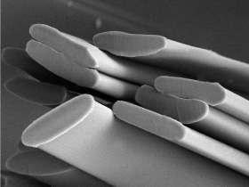
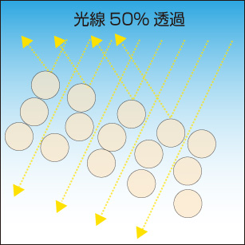
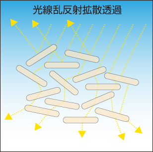

透明感のある美しい光沢をもつ「ベルスクェア」は、その名のとおり、スクェアな断面形状をもつ帯状の特殊扁平断面糸を使用した織物です。特殊扁平断面糸は、光の透過性がレギュラー糸よりも優れているため、これまでのファブリックにはない独特の透明感を生み出します。


レギュラー糸織物

扁平糸織物の光透過性はレギュラー糸織物よりも優れています。
カーテン、レースカーテン、インナーウェア、スポーツウェア、カジュアルウェア等
ＫＢセーレン株式会社
生活資材販売部
kbs.info@kb.seiren.com